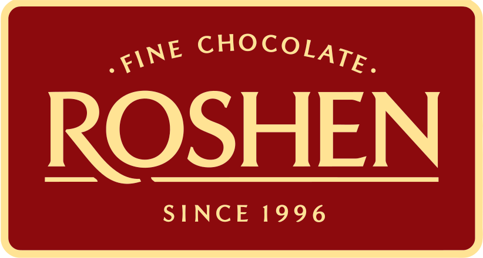

Roshen (Кондитерська корпорація «Рошен») — це один із найбільших виробників кондитерських виробів в Україні та Східній Європі. Компанія спеціалізується на виготовленні солодощів: тортів, цукерок, шоколаду, печива, вафель і карамелі. Бренд відомий своїми популярними продуктами, такими як торт «Київський», цукерки «Вечірній Київ», «Шалена бджілка» та батончики Roshen.
Корпорацію було засновано в 1996 році українським бізнесменом і політиком Петром Порошенком. Назва бренду «Roshen» утворена шляхом відкидання першого та останнього складів від прізвища його засновника (Порошенко). Основою для створення компанії стала фабрика імені Карла Маркса в Києві, яку було приватизовано та модернізовано на початку 1990-х років.
Упродовж років корпорація активно розвивала свої виробничі потужності. До складу Roshen увійшли кондитерські фабрики у Києві, Вінниці, Кременчуці, а також виставковий центр та молочноконсервний комбінат у Бершаді. Компанія побудувала сучасні логістичні центри й запустила власну мережу фірмових магазинів, які стали візитівкою бренду в багатьох містах України.
Roshen експортує свою продукцію у десятки країн світу, серед яких країни Європейського Союзу, США, Канада, країни Близького Сходу та Азії. Щоб відповідати міжнародним стандартам, виробник інвестував у високотехнологічне обладнання та отримав сертифікати якості міжнародного рівня (ISO, IFS).
Окрім кондитерського бізнесу, корпорація відома своїми соціальними та культурними проєктами. Серед них — реконструкція зоопарків, створення соціальних дитячих майданчиків, підтримка медичних закладів та масштабний культурний простір «Roshen Plaza» у Києві із зимовою ковзанкою. Сьогодні Roshen продовжує залишатися одним із лідерів кондитерської галузі України.